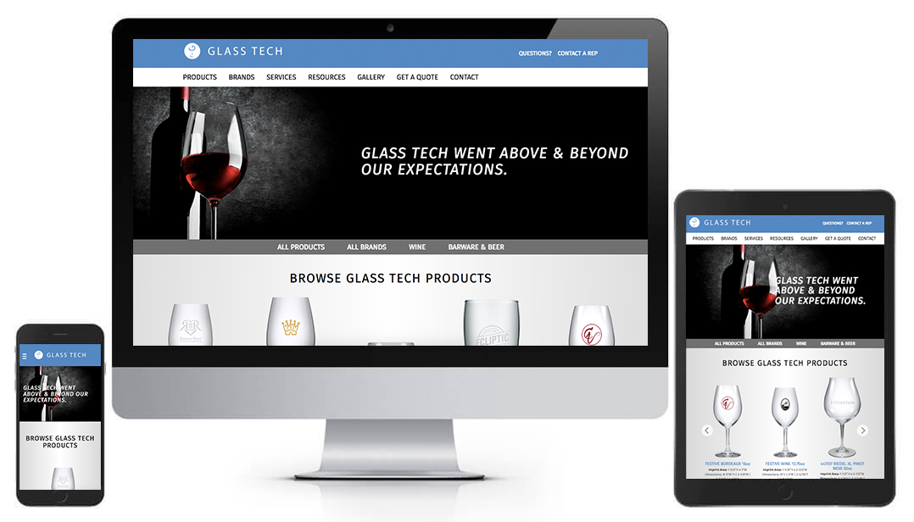
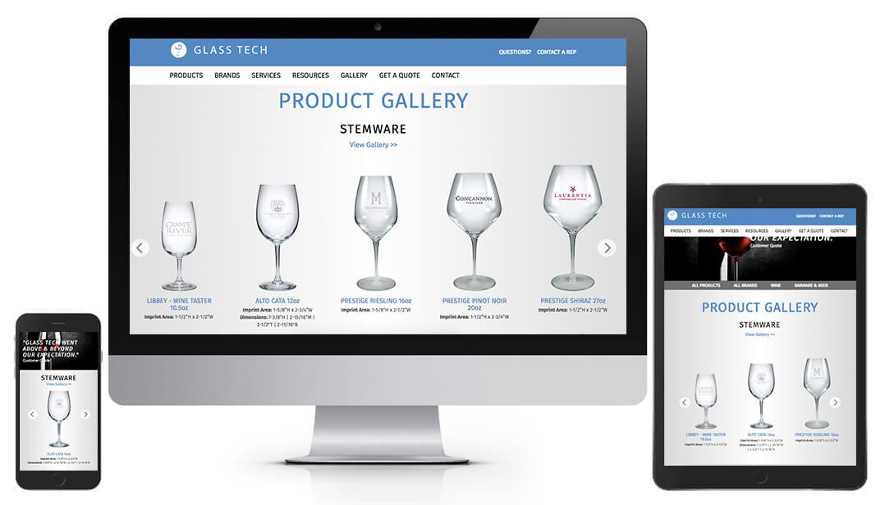

In an effort to reach new markets Glass Tech needed a website that was responsive and user friendly. They did not have a brand identity or existing creative with the exception of their logo. Our challenge was to shape the identity of the brand through this website and provide an excellent user experience that supported their sales team.
One of the new implementations on the site is the contact form. Previously users had choose from a list of numbers to call, which could become confusing or intimidating, if you had no previous work relationship. The new contact page still lists the top sales agents and has an easy form to ask broad questions and be connected to the most appropriate person within the company.
Site navigation was very important in the redesign. The previous site made users go through 4-5 clicks before viewing product information and the way products were sorted was not intuitive. Users can now select how to search for a glass, by either brand or product. If the user needs information on Riedel glasses, they are only 1 click from product information and can view all products within that category.
Visit the Website